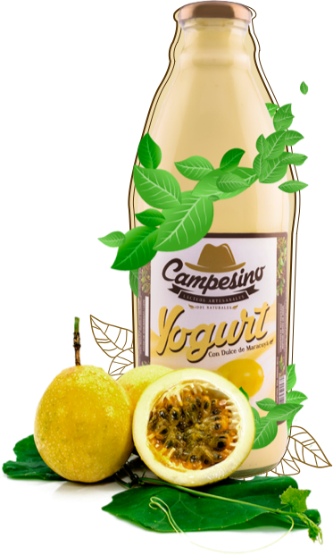

Disfruta de un sabor
natural 
hecho por nosotros, para ti


NATURAL, ARTESANAL Y CAMPESINO
Revitaliza tu cuerpo con sabores naturales.
Encontramos la manera de ofrecerte productos lácteos naturales elaborados de manera artesanal y preparados sin preservantes, colorantes, ni sabores artificiales, para que disfrutes un sabor fresco y natural mientras cuidas tu salud.
Para conservar las características de nuestros productos, usamos empaques de vidrio que no solo ayudan a darles un sabor especial, sino que también logran ser amigables con el medio ambiente.


Te ofrecemos leche 100% natural que conserva todas las proteínas y vitaminas que tu cuerpo necesita para su buen funcionamiento, pues no contiene mezclas de agua, estabilizantes, conservantes o antioxidantes que modifiquen su sabor y cremosidad.
Nuestra leche proviene de pequeños productores colombianos que alimentan y cuidan sus vacas de la manera más natural posible, para que su leche resulte pura y saludable.


Tenemos para ti quesos frescos sin conservantes, estabilizantes ni antioxidantes. Nuestros quesos están hechos solo con leche y sal, logrando de esta manera, ser naturales y saludables.
Disfruta de nuestras 4 presentaciones


Nuestros yogures están preparados con trozos de fruta o pulpa natural. Pruébalos y reconoce su riqueza orgánica gracias a su sabor y cremosidad.
Disfruta de sabores innovadores, que combinados con la leche, dieron como resultado mezclas naturales y cremosas, características fundamentales de nuestros yogures, además de ser endulzado con Stevia.


Nuestros yogures están preparados con trozos de fruta o pulpa natural. Pruébalos y reconoce su riqueza orgánica gracias a su sabor y cremosidad.
Disfruta de sabores innovadores, que combinados con la leche, dieron como resultado mezclas naturales y cremosas, características fundamentales de nuestros yogures, además de ser endulzado con Stevia.


Puedes ponerte en contacto con nosotros cuando lo desees.
¡Escríbenos sí quieres obtener nuestros productos!.


Tiendas Bxisqua y Distribuidora El Chispazo.
Si lo prefieres, podemos llevar el pedido hasta tu casa. Inicialmente contamos con este servicio para Bogotá y Tunja.
contacto@lacteoscampesino.com
314 4463258
Km 7 vía Tunja, San Pedro de Iguaque, Sora Boyacá
Encuéntranos en: